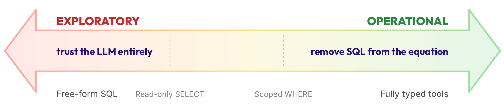
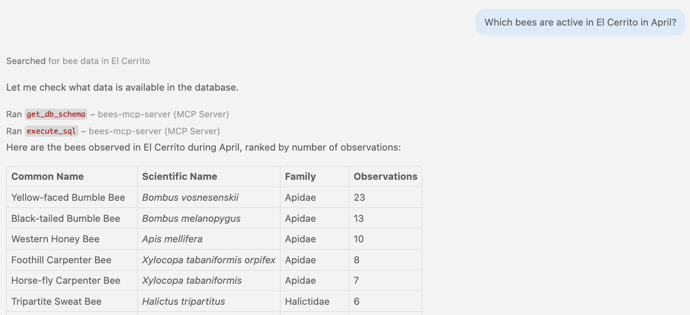
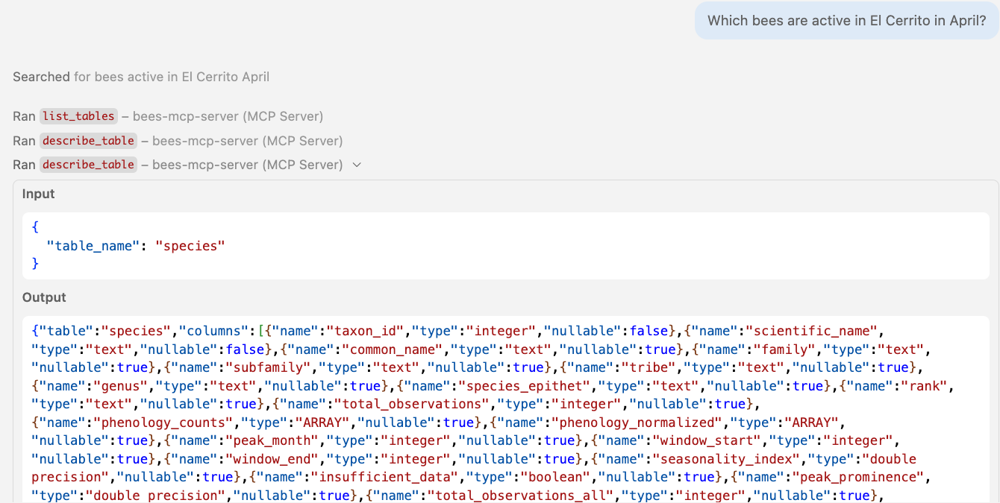
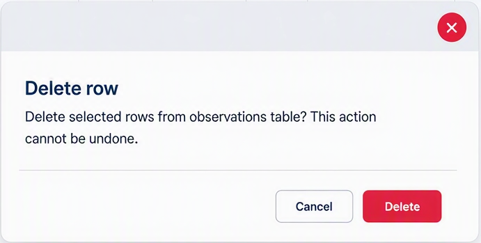
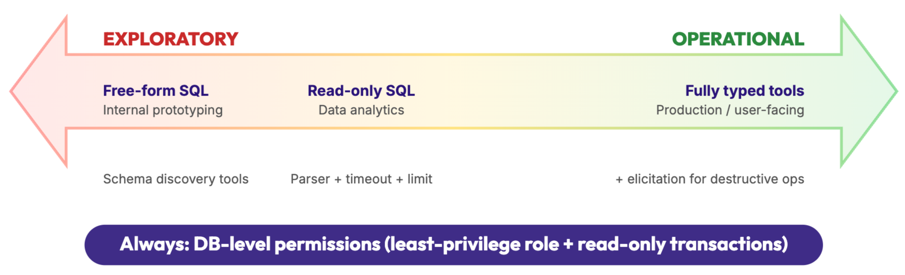

mcp = FastMCP("Bees database MCP server")
For this example, my database stores observations of bees, so I name it accordingly.
We then define an execute_sql tool that accepts any SQL string, executes it against the database,
and returns the rows.
@mcp.tool()
async def execute_sql(sql: str) -> str:
"""Execute a SQL query against the database and return results."""
engine = await _get_engine()
async with engine.connect() as conn:
result = await conn.execute(text(sql))
if result.returns_rows:
columns = list(result.keys())
rows = result.fetchall()
return {"columns": columns, "rows": [[str(v) for v in row] for row in rows]}
await conn.commit()
return f"Statement executed. Rows affected: {result.rowcount}"
How will the agent know what SQL can be passed into that tool, however?
We need to give it a way to discover the schema,
so we also define a get_db_schema tool that
dumps out the entire schema with table names, columns, and data types.
@mcp.tool() async def get_db_schema() -> str: """Return the database schema for all public tables.""" engine = await _get_engine() return await get_db_schema_text(engine)We can test this MCP server out with a coding agent like GitHub Copilot. When we ask the agent "Which bees are active in El Cerrito in April?", the agent realizes that the Bees MCP server has relevant tools for the task, first calls
get_db_schema, then calls execute_sql
with a SELECT query. The database returns the results and the agent formats them into a Markdown table.

This MCP server does work - we got the answer we wanted - but as you may already notice, there are multiple problems and risks to this approach.get_db_schema tool first - it dumps everything!
My observations database has only 5 tables and 60 columns, but a production database
may have hundreds of tables and thousands of columns.
Dumping the entire schema can confuse the LLM with irrelevant information,
and unnecessarily fill up its context window.
What can we do instead? Progressive schema discovery.
We provide two tools: list_tables that only returns table names,
and describe_table that returns the columns only for the given table.
@mcp.tool()
async def list_tables() -> str:
"""List all tables in the public schema. Call this first to discover available tables."""
async with engine.connect() as conn:
result = await conn.execute(text(
"SELECT table_name FROM information_schema.tables "
"WHERE table_schema = 'public' AND table_type = 'BASE TABLE'"))
return {"tables": [row[0] for row in result.fetchall()]}
@mcp.tool()
async def describe_table(table_name: str) -> str:
"""Describe the columns of a specific table. Call list_tables() first to see available tables."""
async with engine.connect() as conn:
result = await conn.execute(text(
"SELECT column_name, data_type, is_nullable FROM information_schema.columns "
"WHERE table_schema = 'public' AND table_name = :table_name "),
{"table_name": table_name})
rows = result.fetchall()
columns = [{"name": col, "type": dt, "nullable": n == "YES"} for col, dt, n in rows]
return {"table": table_name, "columns": columns}
When we expose these tools to GitHub Copilot,
the agent first calls list_tables,
then makes two calls to describe_table,
one for each relevant table.
The agent requires 3 tool calls for schema discovery instead of the single
call required before, so this server design can increase latency.
However, for databases with large schemas, it prevents context bloat.
You can decide based on schema size whether the tradeoff is worth it.

Now let's tackle the destructive elephant in the room: execute_sql
can execute any valid SQL, including updates and deletions.
If a user asks the agent, "How many bee observations have quality grade 'needs_id'? Might want to delete those",
it might just delete thousands of rows with a single DELETE statement.
If that's okay with you, great, but for many scenarios, you'll want to
either completely prevent mutation or at least require user confirmation first.
Let's start by making a read-only version of the SQL execution tool.
The execute_readonly_sql tool below includes multiple guardrails:
a verification that the SQL contains only SELECT, a 30-second timeout to prevent expensive queries,
and a maximum of 100 rows:
@mcp.tool(annotations=ToolAnnotations(readOnlyHint=True), timeout=30.0)
async def execute_readonly_sql(sql: str) -> dict:
"""Execute a read-only SQL query against the database.
Only SELECT statements are allowed. Non-SELECT statements are rejected.
Results are capped at 100 rows."""
try:
validated_sql = validate_readonly_sql(sql)
except ValueError as e:
raise ToolError(str(e))
async with engine.connect() as conn:
result = await conn.execute(text(validated_sql))
columns = list(result.keys())
rows = result.fetchmany(MAX_LIMIT) # Cap rows regardless of LIMIT
return {"columns": columns, "rows": [[str(v) for v in row] for row in rows]}
Notice the tool is annotated with readOnlyHint=True, one of the allowed annotations from the MCP specification.
When we set that read-only hint on a tool, we're sending a signal to the MCP client that this is a tool
that does not modify data, which may affect how the client renders the tool or handles approvals.
But it is only a hint, not a contract. A server could lie about it, or even unintentionally report it incorrectly.
As the server developer, we must enforce actual read-only operations inside the tool logic itself.
That's the goal of validate_readonly_sql: a programmatic guarantee that the provided SQL string
is a SELECT statement and nothing more. In Python, I implemented that check using the pglast package
for parsing the Abstract Syntax Tree (AST) of the SQL string, confirming that it contained a single statement,
and confirming that the single statement is specifically a SELECT statement:
def validate_readonly_sql(sql: str) -> str:
try:
stmts = pglast.parse_sql(sql)
except pglast.parser.ParseError as e:
raise ValueError(f"SQL parse error: {e}")
if len(stmts) != 1:
raise ValueError("Only one statement is allowed")
if (stmt_type := type(stmts[0].stmt).__name__) != "SelectStmt":
raise ValueError(f"Only SELECT statements are allowed, got {stmt_type}")
return sql
That will block the majority of destructive SQL calls, such as:
| Input | Result |
|---|---|
NOT VALID SQL!!! | ❌ SQL parse error: syntax error |
SELECT 1; DELETE FROM observations | ❌ Only one statement is allowed |
DELETE FROM observations | ❌ Only SELECT statements are allowed, got DeleteStmt |
We're not safe yet! There are still a few tricky destructive SQL statements that can pass that check. We could extend the AST-based parsing to try to block those, but PostgreSQL offers a better way: read-only enforcement at the database level.
When we connect to the database, we run this SET command to enforce read-only transactions only:
SET default_transaction_read_only = ON
That blocks these CTEs that start with WITH and hide mutations inside:
| Input | Result |
|---|---|
WITH d as (DELETE ...) SELECT * FROM d | ❌ cannot execute DELETE in a read-only transaction |
WITH u as (UPDATE ...) SELECT * FROM d | ❌ cannot execute UPDATE in a read-only transaction |
We can go even further and create a dedicated PostgreSQL role for the MCP server that only has the ability to issue SELECT queries on a given schema:
CREATE ROLE mcp_readonly; GRANT CONNECT ON DATABASE bees TO mcp_readonly; GRANT USAGE ON SCHEMA public TO mcp_readonly; GRANT SELECT ON ALL TABLES IN SCHEMA public TO mcp_readonly;
That blocks these SELECT statements that call potentially destructive built-in SQL functions:
SELECT pg_terminate_backend(pid)SELECT pg_read_file('/etc/passwd')SELECT pg_reload_conf()We could choose to enforce read-only access only via the least-privilege role, but that means your server has no layers of protection if that role isn't set properly for some reason. Just in case, it's best to employ all four layers of protection.
Could a malicious user or a capricious agent still find a way to slip a dangerous query through? If you need a 100% guarantee, the best option is to not expose SQL at all.
In this approach, we define tools specific to common user needs, and those tools accept values that get safely merged into a templated SQL query - or passed to an ORM call.
For example, the search_species tool below accepts a search query string and an integer limit,
and executes a templated SQL query on a hard-coded table:
@mcp.tool(annotations=ToolAnnotations(readOnlyHint=True))
async def search_species(q: str, limit: int = 10) -> list[SpeciesResults]:
"""Search bee species by scientific or common name.
Use to resolve a name to a taxon_id before calling other tools."""
sql = text("""
SELECT taxon_id, scientific_name, common_name, family, genus FROM species
WHERE to_tsvector('simple',
coalesce(scientific_name, '') || ' ' || coalesce(common_name, ''))
@@ plainto_tsquery('simple', :q)
ORDER BY scientific_name ASC LIMIT :limit""")
async with engine.connect() as conn:
result = await conn.execute(sql, {"q": q, "limit": min(limit, 50)})
return [SpeciesResult(...) for row in result.fetchall()]
We need to define additional tools for every SQL query that might be needed to
answer user questions, like a search_observations_tool that accepts
latitude, longitude, date, and species parameters.
When we provide GitHub Copilot with those tools and ask the question
"Are there any carpenter bees around Berkeley?", the agent first calls
search_species with a query of "carpenter bee" to get names and
scientific metadata for matching bees, then calls search_observations
with the latitude and longitude for Berkeley.

The obvious advantage of this approach is that the agent never writes the SQL statements themselves, so it can't accidentally issue a destructive, expensive, or slow query.
There's a massive drawback: the agent can only answer the subset of user questions that you've anticipated.
If you decide to go with this approach, try to find a way to monitor which of your users' questions can't be answered,
perhaps by exposing a give_feedback tool on the server that encourages feature requests.
If you are developing an MCP server that basically serves as an administration tool (versus a data analysis and exploration tool), then you likely do want to allow deletion - but with caution. In a database admin UI, a delete button is typically bright red and pops up a dialog to confirm deletion before proceeding:

We can achieve a similar UI for our MCP server, thanks to form-based elicitation, a relatively recent addition to the MCP spec. In the MCP clients that support elicitations, the client will pop up a form with our desired question and options. We can then change what our tool does, depending on what the user selects.
For example, this delete_observation tool uses an elicitation to confirm
the user really wants to delete the row that it found in the database:
@mcp.tool(annotations=ToolAnnotations(destructiveHint=True))
async def delete_observation(ctx: Context, observation_id: int) -> str:
"""Delete a bee observation."""
row = ... # look up the record
result = await ctx.elicit(
f"Permanently delete observation #{row.observation_id}?\n"
f". {row.scientific_name} on {row.observed_data}\n",
response_type=["yes, delete it", "no, keep it"])
if result.action == "cancel" or result.data == "no, keep it":
return "Deletion cancelled."
await session.execute(
text("DELETE FROM observations WHERE observation_id = :oid"),
{"oid": observation_id}
)
await session.commit()
return f"Deleted observation #{observation_id}"
When we ask GitHub Copilot to delete an observation, the agent runs that delete_observation tool
and the elicitation dialog pops up. The user has to explicitly click to confirm deletion.

Elicitation is also useful beyond destructive operations. You can use it for resolving ambiguity in user queries ("Did you mean...?") or suggesting alternative queries when a request would be too expensive (like narrowing a 200 km search radius to 50 km).
We've explored a range of options for exposing your database as an MCP server:

Free-form SQL suits internal prototyping where you need maximum flexibility. Read-only SQL works well for data analytics use cases — add a parser, timeout, and row limit. Fully typed tools are best for production and user-facing scenarios — add elicitation for destructive operations. Across all approaches, always enforce DB-level permissions with a least-privilege role and read-only transactions. Mix and match these techniques based on your situation.
Building MCP servers for databases empowers users to interact with data through natural language, but you should design your tools with safety in mind.